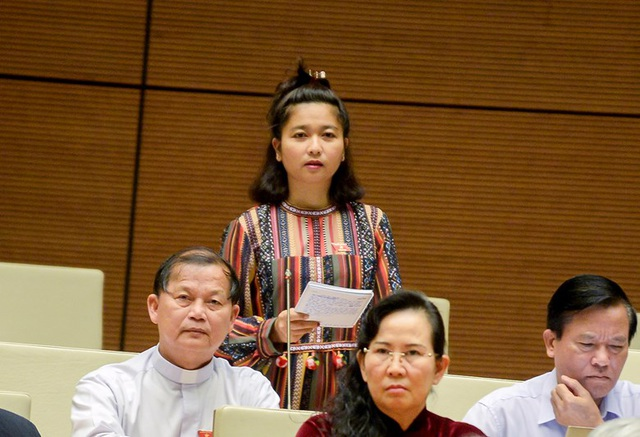
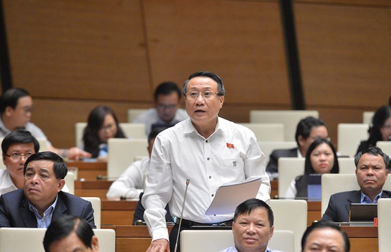
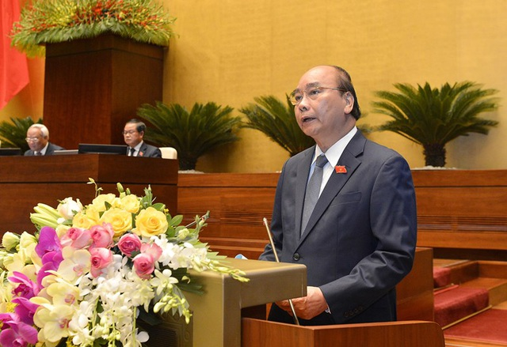
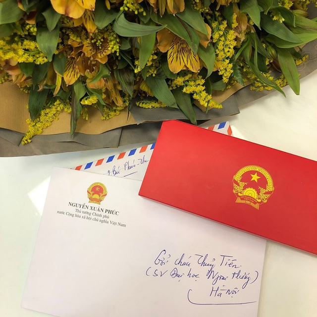
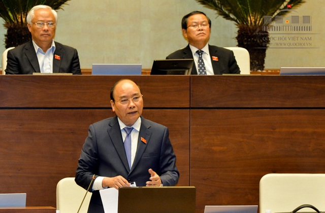

Dân trí Nhắc tới văn hóa từ chức mà đại biểu Ksor H’Bơ Khăp đề cập, Thủ tướng khẳng định, quy định pháp luật đã đề cập nội dung này, các văn bản hướng dẫn thi hành luật cũng không thiếu.
Thủ tướng khẳng định "có văn hóa từ chức"Trả lời về vấn đề gói hỗ trợ an sinh xã hội, Thủ tướng nhận định, hỗ trợ người dân đang được thực hiện tốt nhưng hỗ trợ doanh nghiệp, người sản xuất kinh doanh thì chưa tốt. Đây là điểm cần khắc phục. “Chúng tôi đã thấy rõ điểm bất cập này để khắc phục cho tốt hơn” - Thủ tướng nói.
Vấn đề bồi dưỡng nhân tài từ nguồn nhân lực trẻ, Thủ tướng chia sẻ quan điểm với đại biểu Nguyễn Anh Trí, Lê Thanh Vân. “Nhân tài không nhất thiết chỉ là trong cơ quan nhà nước, là cán bộ Đảng viên mà nhân tài có rất nhiều trong nhân dân. Phải làm sao thu hút, khuyến khích nhân tài trong gần 100 triệu người dân Việt Nam” - Thủ tướng nêu quan điểm.
Nữ đại biểu đoàn Gia Lai đề cập đến vấn đề văn hóa từ chức.
Nhắc tới văn hóa từ chức mà nữ đại biểu Ksor H’Bơ Khăp đề cập, Thủ tướng khẳng định, quy định pháp luật đã có đề cập nội dung này; các văn bản hướng dẫn thi hành luật cũng không thiếu. Thủ tướng nhắc lại: “Văn hóa từ chức là có, tôi xin khẳng định vậy”.
Tiết kiệm chi để dành nguồn lực cho phát triểnThủ tướng nói về con số hụt thu của ngân sách khiến các đại biểu Quốc hội lo lắng. Thủ tướng đề cập, cứ 1% GDP tạo ra 600.000 việc làm mới. Tăng trưởng mạnh mẽ hơn nữa là để giải quyết những khó khăn trước mắt.
Thủ tướng nêu bài học kinh nghiệm của Quảng Ninh về kết quả tăng trưởng dù điều kiện hết sức khó khăn. Người đứng đầu Chính phủ cũng nêu giải pháp tiết kiệm chi để dành nguồn lực cho phát triển. Khi cần thiết, Chính phủ sẽ đề nghị nới lỏng chính sách tài khóa, tiền tệ để có thêm 10% (ít nhất là 35 tỷ USD) để đưa thêm vào phát triển kinh tế.
Trong lúc khủng hoảng toàn cầu, phải kiểm soát tốt, giữ ổn định vĩ mô. Chiếc bánh chỉ có thế, "khéo ăn thì no, khéo co thì ấm", cần tiếp tục giữ ổn định trong thời gian tới, nhất là để phục vụ Đại hội Đảng.
Vấn đề phát triển đồng bằng sông Cửu LongThủ tướng nhận định đây là nội dung thấm thía mà các đại biểu Quốc hội nêu. Vùng vựa lúa của Việt Nam với hơn 13 triệu dân cần xác định tư duy phát triển thuận thiên. Hạn mặn năm 2015-2016 gây thiệt hại nặng nề, sang đến năm sau, cơ cấu đầu tư chuyển từ đất trồng lúa sang nuôi trồng thủy sản, trồng cây ăn quả.
Thủ tướng nhắc đến giải pháp công trình như cống Cái Lớn Cái Bé ở Kiên Giang. Đường Lộ Tẻ - Rạch Sỏi vừa khánh thành, công trình ngọt hóa Bến Tre (tỉnh bị xâm nhập mặn rất sâu)… đã mang lại những thay đổi tích cực cho khu vực.
Tháng 12 tới, cao tốc Trung Lương - Mỹ Thuận sẽ thông xe, Mỹ Thuận - Cần Thơ cũng khắp khởi công. Thời gian tới sẽ bổ sung 25.000 tỷ nữa để đầu tư hạ tầng cho khu vực. 38 dự án như đường ven biển miền Tây là then chốt để phát triển liên vùng. Đường cao tốc TPHCM - Vũng Tàu cũng sẽ sớm được khởi công. Tất cả những giải pháp đó để giữ cho ĐBSCL đỡ bị ảnh hưởng nhất khi đây là vùng chịu tác động lớn nhất của biến đổi khí hậu và nước biển dâng.
Thủ tướng trả lời về mục tiêu kép Việt Nam đang theo đuổi10h55 ngày 10/11, Thủ tướng trả lời câu hỏi của đại biểu Hoàng Tất Thắng (Vĩnh Long), Hà Sỹ Đồng (Quảng Trị) về mục tiêu kép mà Việt Nam theo đuổi.
Đại biểu Hà Sỹ Đồng - Đoàn đại biểu Quốc hội tỉnh Quảng Trị - đặt câu hỏi chất vấn
Theo Thủ tướng, Covid-19 đang quay trở lại với tốc độ cao ở nhiều quốc gia và vùng lãnh thổ. Để có thể giữ được đất nước không bị tăng trưởng âm, cần phải giữ vững xã hội, duy trì việc làm và tăng trưởng ở mức cần thiết. Cần phải thực hiện nhiều giải pháp, trước hết là tăng cường tự chủ, thích ứng ở mức độ cao.
Kinh nghiệm đối phó dịch Covid-19 vừa qua, Việt Nam đã xuất siêu gần 20 tỷ USD. Phát huy tinh thần này cần đẩy cao hoạt động xuất khẩu, nông nghiệp để làm chỗ dựa cho nền kinh tế.
Ngành du lịch phát triển trong bối cảnh dịch bệnh, Thủ tướng cho rằng phải dựa vào nguồn lực trong nước là lượng dân đông, khách du lịch nội địa cần phải khai thác hiệu quả. Hơn nữa, thay đổi phương thức làm việc trong dịch bệnh, dùng công nghệ thông tin, kỹ thuật số làm phương thức thay đổi cuộc sống, giáo dục, y tế không tiếp xúc, theo Thủ tướng là một giải pháp. Cả nước cũng phải tính đến khả năng sản xuất vắc xin chủ động.
Thủ tướng báo cáo khái quát trước khi trả lời chất vấn10h20 ngày 10/11, Thủ tướng Nguyễn Xuân Phúc đăng đàn trả lời chất vấn trước Quốc hội. Thủ tướng khái quát, những ngày qua, các nội dung thảo luận, chất vấn đã đi vào những vấn đề rất sâu sắc, thời sự, cấp thiết, từ việc phòng chống thiên tai, phát triển kinh tế, chống dịch, phòng chống tham nhũng… thể hiện sự tâm huyết, nghiêm túc của các đại biểu Quốc hội.
Thủ tướng và các thành viên Chính phủ tiếp thu sâu sắc các ý kiến, quyết tâm thực hiện các mục tiêu phát triển kinh tế xã hội để có thể đạt kết quả cao nhất so với các chỉ tiêu được giao.
Thủ tướng Nguyễn Xuân Phúc có 2 giờ trả lời chất vấn tại Quốc hội.
“Không chỉ năm 2020 mà từ đầu nhiệm kỳ, Việt Nam đã đối phó những thách thức lịch sử, từ thiên tai, hạn hán tới sự cố Formosa, dịch bệnh Covid-19, mưa lũ chưa từng có. Tạo ra 1.200 tỷ USD trong những năm qua. Mức tăng trưởng dương đạt được của năm 2020 là một kỳ tích” – Thủ tướng nói.
Câu chuyện bó đũa được Thủ tướng nhắc lại để khẳng định tinh thần đoàn kết đã tạo nên sức mạnh vượt qua mọi khó khăn, thách thức cho đất nước. Năm 2020 thể hiện những dấu mốc cho thấy vị thế của Việt Nam trên trường quốc tế. Thủ tướng cảm ơn Quốc hội, các cơ quan tư pháp đã đồng hành cùng Chính phủ trong hành trình 5 năm qua.
Một thành tích được Thủ tướng nhấn mạnh là khả năng tạo việc làm của nền kinh tế. Đó là yếu tố quan trọng trong các chính sách để giảm nghèo bền vững. Nhóm dân số trung lưu của Việt nam đang tăng mạnh, dự báo sẽ lên mức trên 50% dân số.
Thủ tướng ghi nhận ý kiến của các đại biểu về hơn 1 triệu người đang có mức lương hưu quá thấp khi nghỉ hưu trước năm 1993 . Thủ tướng khẳng định đã giao Bộ trưởng Lao động - Thương binh và Xã hội nghiên cứu giải quyết thấu đáo vấn đề này.
Nhắc lại đại dịch Covid-19 và những tác động sâu sắc tới nền kinh tế toàn cầu, Thủ tướng một lần nữa khẳng định chủ trương hành động vì mục tiêu kép của Việt Nam. Kết quả đạt được mức tăng trưởng dương của năm 2020, theo Thủ tướng, là một thành công lớn được cả thế giới ghi nhận.
Nói về hoạt động cứu hộ cứu nạn sau đợt mưa bão, lũ lụt lịch sử tại miền Trung những ngày qua, Thủ tướng khẳng định, tình đồng chí, đồng bào thể hiện là minh chứng cho tính ưu việt, nhân văn của chế độ. Thủ tướng yêu cầu sớm khắc phục hậu quả, ổn định đời sống nhân dân. Chính phủ sẽ nghiêm khắc kiểm điểm, xem xét các vấn đề, từ việc giữ rừng, vận hành thủy điện vừa và nhỏ, xây dựng bản đồ cảnh báo sạt lở, lũ quét, kiện toàn lực lượng phòng chống thiên tai để nâng cao năng lực của đội ngũ này…
“Mỗi thành quả đạt được của nhiệm kỳ 2016-2020 là nỗ lực của 100 triệu người dân. Người dân luôn là trung tâm của các chính sách" - Thủ tướng khẳng định.
Xác nhận hiệu quả, hiệu lực quản lý nhà nước chưa cao, Thủ tướng nhấn mạnh phải nâng cao năng lực xây dựng chính sách, hoạt động của bộ máy cán bộ công chức, viên chức, cải cách hành chính. Chính phủ đã đề xuất cấp có thẩm quyền về cơ chế tiền lương, tuyển dụng cán bộ phù hợp. Đây là nhiệm vụ trọng tâm, ưu tiên đột phá chiến lược trong thời gian tới. Thủ tướng mong có được sự chia sẻ, góp sức của các đại biểu Quốc hội để cùng xây dựng chính sách pháp luật khả thi, đi vào cuộc sống hiệu quả hơn nữa.
Nhắc tới việc xác định mục tiêu tăng trưởng 6% của năm tới mà Quốc hội đã thảo luận, cho ý kiến, lãnh đạo Chỉnh phủ nhận định đây là mục tiêu khiêm tốn. Tuy nhiên, trước những thách thức thực tế như diễn biến của dịch bệnh Covid-19, biến đổi khí hậu, Chính phủ nỗ lực xây dựng các kịch bản để trong trường hợp nào cũng chủ động điều hành nền kinh tế. “Thách thức lớn nhất không phải thoát bẫy thu nhập trung bình, tụt hậu về kinh tế mà là thiếu ý chí vươn lên, thiếu quyết tâm hành động” - Thủ tướng nhấn mạnh.
Về lĩnh vực xã hội, Thủ tướng nhắc tới việc đổi mới, nâng cao chất lượng giáo dục đào tạo. Thủ tướng đề cập, ngày nay trẻ em Việt Nam ai ai cũng được đến trường, được vui chơi nhưng người dân nào cũng có thể thấy những hạn chế của ngành giáo dục như các đại biểu Quốc hội nêu tại hội trường. Chính phủ sẵn sàng cho các hoạt động đổi mới toàn diện ngành giáo dục, từ chương trình tới sách giáo khoa. Nhưng trung tâm mỗi ngôi trường vẫn là người thầy. Tập trung đào tạo đội ngũ sư phạm chính là mục tiêu quan trọng cho thời gian tới.
Với ngành y tế, Thủ tướng nhận định, cũng còn nhiều việc phải làm. Cần xem xét lại xu hướng thương mại hóa quá mức, tiền nào vải nấy trong hoạt động khám chữa bệnh. Cần điều chỉnh để người dân có thể tiếp cận dịch vụ khám chữa bệnh với mặt bằng công bằng, chi phí hợp lý.
Chính phủ không chấp nhận cảnh người dân phải khám chữa bệnh trong bối cảnh mù mờ về chi phí y tế. Vì vậy, Thủ tướng yêu cầu ngành y tế phải hành động quyết liệt hơn nữa để minh bạch hóa chi phí khám chữa bệnh của Việt Nam.
Thủ tướng nhắc lại trường hợp sinh viên Đại học Ngoại thương Trần Thủy Tiên đã chiến thắng căn bệnh ung thư khiến ông rất xúc động. Đây là câu chuyện truyền cảm hứng để mỗi người dân cùng nỗ lực tiến về phía trước.
Bức thư Thủ tướng gửi động viên nữ sinh bị ung thư. (Ảnh: Mai Châm)
Về việc phát triển văn hóa, Thủ tướng khẳng định tiếp thu ý kiến của các đại biểu Quốc hội, Chính phủ sẽ trình Quốc hội kế hoạch ngân sách ưu tiên hơn cho lĩnh vực văn hóa để chăm chút, bồi đắp hơn nữa cho nền tảng này của quốc gia, dân tộc.
Thời gian gần đây, hiện tượng thiên tai và biến đổi khí hậu xảy ra với tần suất lớn hơn, mức độ nghiêm trọng hơn. Nói về cảm giác đau xót khi phát hiện những thi thể trẻ nhỏ trong vụ sạt lở kinh hoàng tại Phước Sơn, Quảng Nam vừa qua, Thủ tướng nói về những nguyên nhân dẫn tới hiện tượng thiên tai khủng khiếp. Ông khẳng định phải kiên quyết bảo vệ rừng. Nói về quyết định đóng cửa rừng trước đây đã ban hành, Thủ tướng khởi động phong trào trồng 1 triệu cây xanh cho năm tới. Tỷ lệ che phủ rừng của cả nước dù đã được cải thiện nhưng theo Thủ tướng vẫn cần tiếp tục đầu tư để nâng chất lượng rừng.
“Chúng ta không khỏi xót xa khi nhìn trẻ em phải đu dây tới trường để vượt qua suối trong mùa lũ dữ tại miền núi hay cảnh con em phải chèo xuồng tại đồng bằng sông Cửu Long. Đầu tư hạ tầng, theo đó, vẫn là một trong những yếu tố then chốt để phát triển nền kinh tế” - Thủ tướng khuyến cáo xây dựng nền kinh tế hài hòa giữa phát triển và bảo tồn.
Thủ tướng nhận định Chính phủ phải nỗ lực hơn nữa cho những mục tiêu để ra. Lãnh đạo Chính phủ khái quát, thế giới nhìn nhận Việt Nam là một quốc gia có sức sống phi thường, chống đỡ xâm lăng qua hàng nghìn năm lịch sử. Không còn lãnh thổ để khai phá như tổ tiên nhưng người Việt ngày nay có cả bầu trời tri thức, công nghệ để khám phá, đưa đất nước phát triển. Thủ tướng nhắc lại 4 câu thơ của Hồ Chủ tịch và đề nghị kế thừa tinh thần này để phấn đấu: “Không có việc gì khó/Chỉ sợ lòng không bền/ Thịnh vượng và phát triển/ Quyết chí ắt làm nên”.
Nhiều câu hỏi chờ Thủ tướng trả lờiSáng 10/11, Thủ tướng Nguyễn Xuân Phúc có gần 2 giờ báo cáo các vấn đề thuộc lĩnh vực điều hành, quản lý của Chính phủ và trực tiếp trả lời chất vấn của đại biểu Quốc hội.
Nội dung đăng đàn của Thủ tướng sẽ là phần chốt lại 2,5 ngày chất vấn, cũng là chốt lại phiên chất vấn đặc biệt - phiên chất vấn cuối cùng của Quốc hội khóa XIV.
Ngay trong buổi sáng 10/11 đã có nhiều đại biểu nêu câu hỏi chất vấn với Thủ tướng.
Đại biểu Nguyễn Thái Học (Phú Yên) đề nghị Thủ tướng nêu giải pháp căn cơ để hạn chế vi phạm công vụ của cán bộ công chức?
Đại biểu Nguyễn Mai Bộ (An Giang) muốn người lãnh đạo đứng đầu Chính phủ nói về trách nhiệm với việc quản lý nhà chung cư.
Đại biểu Vũ Trọng Kim (Hải Dương) băn khoăn vì sao việc phát hiện và xử lý kỷ luật cán bộ cấp cao rất chậm, nhiều trường hợp kéo dài hàng chục năm?
Theo thông lệ, tại kỳ họp cuối năm, Thủ tướng Chính phủ trực tiếp trả lời chất vấn trước Quốc hội.
Trong 2 ngày qua, đã có rất nhiều đại biểu Quốc hội đặt các câu hỏi chất vấn với người lãnh đạo đứng đầu Chính phủ.
Đại biểu Lưu Văn Đức (Đắk Lắk) đề nghị Thủ tướng cho biết, giải pháp sắp tới để thực hiện nghiêm Nghị quyết 11/QH13 của Quốc hội về tiếp tục rà soát, thu hồi diện tích đất sử dụng không hiệu quả, sử dụng không đúng mục đích và giao lại cho địa phương để giao cho người dân, nhất là các hộ dân tộc thiểu số thiếu hoặc không có đất ở, đất sản xuất.
Đại biểu Mai Thị Ánh Tuyết (An Giang) đặt vấn đề, trong bối cảnh sản xuất, kinh doanh khó khăn hiện nay, Thủ tướng Chính phủ rất quyết liệt với nhiều gói hỗ trợ như tín dụng thuế, bảo hiểm xã hội, hỗ trợ người lao động. Đây là những chính sách được đánh giá là toàn diện, kịp thời, nhưng đến nay mức giải ngân thấp. Vậy vì sao đối tượng rất cần nhưng khó tiếp cận các chính sách này và các giải pháp của Thủ tướng để tháo gỡ khó khăn doanh nghiệp thời gian tới là gì.
Đại biểu Quách Thế Tản (Hoà Bình) dẫn báo cáo của Chính phủ về lĩnh vực tư pháp nêu tỷ lệ Ủy ban nhân dân, người đại diện Ủy ban nhân dân không tham gia đối thoại, không tham gia phiên tòa hành chính còn cao và có xu hướng ngày càng tăng qua các năm. Bên cạnh đó phần lớn các bản án hành chính chậm được thi hành, người phải thi hành án lại là Ủy ban nhân dân, Chủ tịch Ủy ban nhân dân với một tỷ lệ rất cao là 446/467 bản án. Đại biểu đề nghị Thủ tướng cho biết trách nhiệm của mình về việc này và giải pháp khắc phục trong thời gian tới
Đại biểu Nguyễn Bá Sơn (Đà Nẵng) nêu vấn đề, thủy điện Đắk Mi 4 chặn dòng để lấy nước phát điện, nhưng sau đó không trả đủ nước vào dòng Vu Gia, gây khô hạn, ngập úng liên tục trong nhiều năm qua ở khu vực hạ du của Vu Gia, Thu Bồn, ảnh hưởng đến cuộc sống và phát triển kinh tế của vùng Đại Lộc và thành phố Đà Nẵng với 1,2 triệu dân. Vậy ai chịu trách nhiệm và chịu trách nhiệm như thế nào về vấn đề này?
Đại biểu Lê Công Đỉnh (Long An) chưa hài lòng với nội dung trả lời của Bộ trưởng Xây dựng về xử lý quy hoạch treo nên muốn chất vấn Thủ tướng. Đại biểu muốn biết chỉ đạo của Thủ tướng để người dân không khổ vì 2 chữ “quy hoạch”.
Đại biểu Cao Văn Trọng (Bến Tre) hỏi Thủ tướng liệu có nên rút lại đề xuất với Quốc hội tại kỳ họp này việc thông qua sửa Luật thuế 71/2014/QH13 để điều chỉnh thuế giá trị gia tăng đối với mặt hàng phân bón từ 0% lên 5%, để giúp cho các nhà máy sản xuất phân bón DAP Hải Phòng, DAP Lào Cai, Đạm Ninh Bình trong 12 đại dự án đang bị đắp chiếu, khôi phục sản xuất, giảm lỗ, được khấu trừ chi phí đầu vào để hạ giá thành chi phí sản xuất phân bón. Trong khi người nông dân cả nước đang gặp khó khăn nặng nề vì ảnh hưởng hạn mặn và bão lũ vừa qua.
Đại biểu Hà Sỹ Đồng (Quảng Trị) muốn biết Chính phủ nhận định làn sóng dịch Covid-19 trên toàn cầu tiếp tục diễn biến phức tạp và kéo dài hơn dự kiến, kịch bản ứng phó của Chính phủ sẽ như thế nào? Kịch bản kinh tế xấu nhất là gì, đặt trong bối cảnh điều kiện thực tế của Việt Nam?
Đại biểu Võ Thị Như Hoa (Đà Nẵng) đề nghị Thủ tướng Chính phủ cho biết, thời gian gần đây, một loạt cán bộ ở nhiều cấp bị xử lý kỷ luật đảng, chính quyền, thậm chí xử lý hình sự do có liên quan đến việc ký ban hành văn bản cá biệt, văn bản hành chính không đúng quy định, gây thất thoát tài sản Nhà nước. Tuy nhiên, chưa từng thấy vị cán bộ lãnh đạo nào bị xử lý kỷ luật do tham mưu sai, tham mưu chậm, tham mưu không phù hợp văn bản quy phạm pháp luật.
Theo đại biểu, mặc dù pháp luật về cán bộ, công chức, viên chức cũng như các văn bản của Đảng đều đã có quy định, mà nếu so sánh việc tham mưu ban hành hoặc là văn bản quy phạm pháp luật sai, chậm, không phù hợp thì mức độ gây hậu quả lớn hơn so với tham mưu ban hành sai văn bản hành chính, văn bản cá biệt. Vậy đây có phải là nguyên nhân dẫn đến tình trạng quy định pháp luật được đánh giá là còn nhiều bất cập? Mâu thuẫn chồng chéo, không phù hợp, làm cản trở phát triển kinh tế - xã hội, nhưng mãi năm này qua năm khác vẫn không được khắc phục hay không?
Đại biểu Phan Thị Bình Thuận (TPHCM) cho biết, tại kỳ họp thứ 6 đã gửi phiếu chất vấn cho Thủ tướng và Bộ trưởng Bộ Công an về tình trạng giả mạo hiện tồn tại trong hầu hết các lĩnh vực của đời sống, đặc biệt là giả mạo giấy tờ, hồ sơ bệnh án... Hiện nay, tình trạng này vẫn đang diễn biến phức tạp, gây nhức nhối trong xã hội. Đại biểu đề nghị Thủ tướng cho biết những giải pháp đang thực hiện như thế nào, có hiệu quả hay không và cần có những giải pháp nào khác không để ngăn chặn cũng như hạn chế tình trạng này?